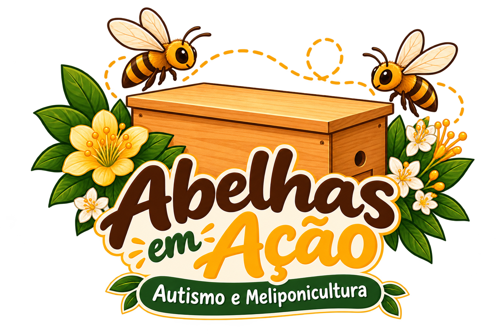

Introdução
Conhecendo a meliponicultura
Vídeo introdutório sobre a criação de abelhas nativas sem ferrão.
Canal: preencher após selecionar o vídeo
Um espaço para aprender sobre as abelhas sem ferrão, registrar nossas práticas de cultivo e descobrir, no tempo da natureza, novas formas de observar, cuidar e aprender com esses animais incríveis.

Este é o nosso espaço de aprendizagem e documentação da meliponicultura: reunimos referências, compartilhamos experiências e observamos com cuidado o mundo das abelhas nativas sem ferrão.
Vídeos selecionados para estudar espécies, caixas, manejo e práticas de cultivo.
Ver os vídeosConteúdos e lembretes sobre o ambiente, os cuidados e a manutenção responsável.
Consultar orientaçõesAprender a olhar com atenção para a atividade das abelhas e suas mudanças.
Abrir o diárioUma prática educativa que respeita ritmos individuais, interesses e necessidades sensoriais.
Conhecer a propostaUma curadoria de vídeos encontrados na internet para apoiar nossos estudos. Os vídeos abaixo são exemplos de cadastro: substitua os links de demonstração pelos vídeos que vocês realmente utilizam.
Vídeo introdutório sobre a criação de abelhas nativas sem ferrão.
Canal: preencher após selecionar o vídeo
Referência para estudar estruturas de criação e práticas de manejo responsável.
Canal: preencher após selecionar o vídeo
Um convite a observar o fluxo de abelhas e registrar o que acontece ao longo do dia.
Canal: preencher após selecionar o vídeo
Material para conhecer a relação entre abelhas nativas, plantas e ecossistemas.
Canal: preencher após selecionar o vídeo
Os cartões acima são modelos de organização, não recomendações de vídeos específicos. Substitua os IDs de exemplo antes de publicar.
Uma base inicial de consulta para organizar as práticas. Ajuste os procedimentos às espécies mantidas, às condições locais e às orientações de meliponicultores experientes e fontes técnicas confiáveis.
Não existe uma única maneira de participar. O objetivo é construir uma experiência acolhedora, com possibilidades de envolvimento compatíveis com os interesses, o conforto e as necessidades de cada pessoa.
Registre uma observação e copie o texto para guardar no arquivo ou sistema que vocês utilizam. Nesta versão inicial, os registros não são enviados a um servidor nem salvos automaticamente.
Preencha o formulário para gerar um texto que poderá ser copiado e arquivado.
Dica: guarde os registros em um documento compartilhado ou pasta organizada por ano e caixa.
Este espaço poderá crescer com nossos registros, fotografias, referências e aprendizados. A ideia é transformar a experiência cotidiana de cultivo em conhecimento organizado, acessível e útil para outras pessoas interessadas no tema.